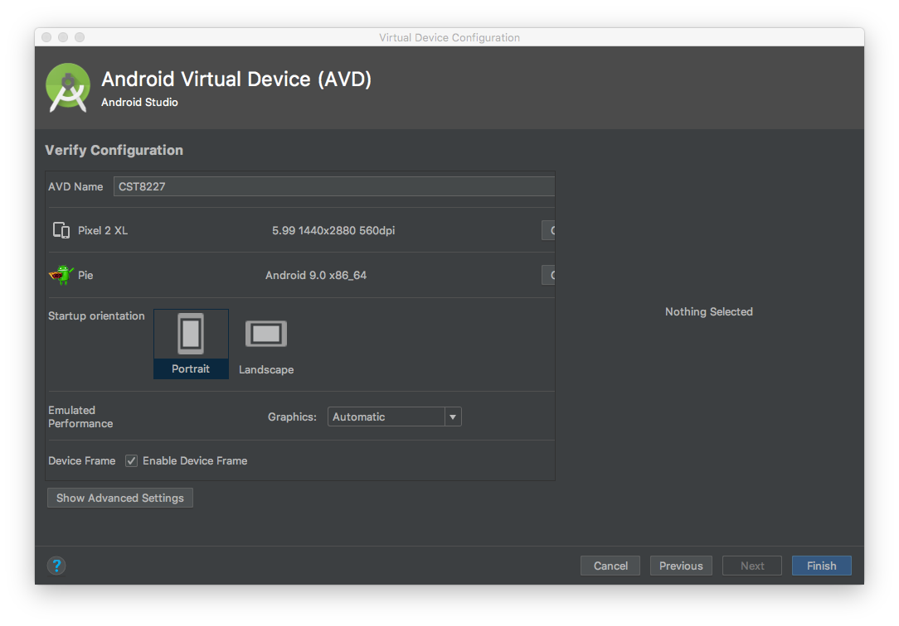

Create an Android Virtual Device for this Course
Launch the Android Virtual Device Manager from Android Studio: Tools > Android > AVD Manager
Create an Android Virtual Device (AVD) with the following specifications:
- Select Hardware
- Category: Phone
- Select: Pixel 2 XL, Size 5.99", Resolution 1440x2560, Density 560dpi
- Click: Next
- System Image
- Click tab: x86 Images
- Pie
- API Level: 28
- ABI: x86_64
- Target: Android 9.0 (Google APIs)
- Click: Next
- Important! Change the AVD Name to: CST8227
- Click: Finish (to create the AVD)
Notes:
- please use the CST8227 AVD for all submitted work
- you are permitted and encouraged to create other AVDs. For example, if you have an Android phone, you can create an AVD to emulate it.
Reference Screenshot
Your AVD should look like mine:
